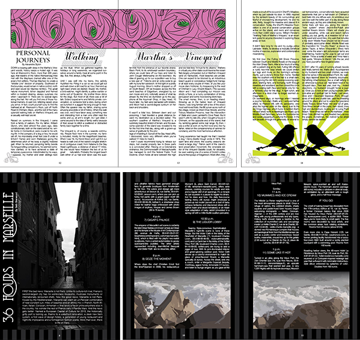

Digital Imagemaking and Editorial Design
For this project I have been supplied with 3 Travel articles, and required to design and create 16 Page Magazine, complete with my own images, in a style of my choice. I had to create my own digital images and also to design, plan and create a professional high quality 16 page travel magazine. I was free to break out of the standard commercial Travel Magazine style and to create mine, based on any researched style of my choice, which was Art Deco.
